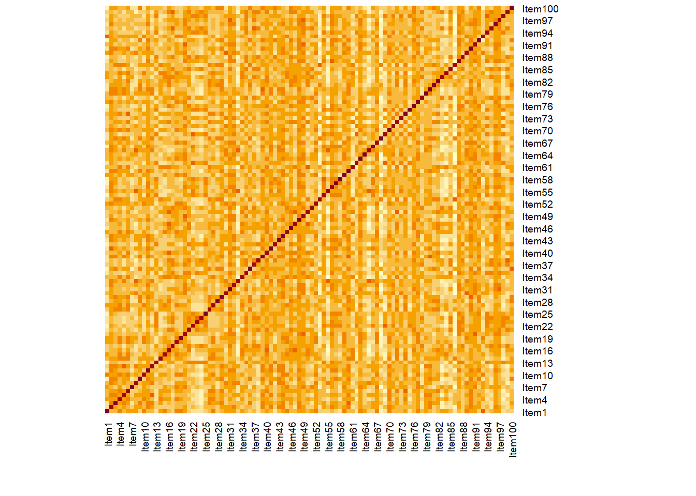
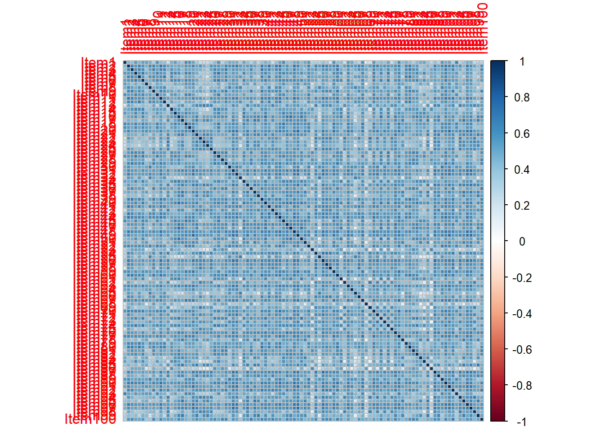
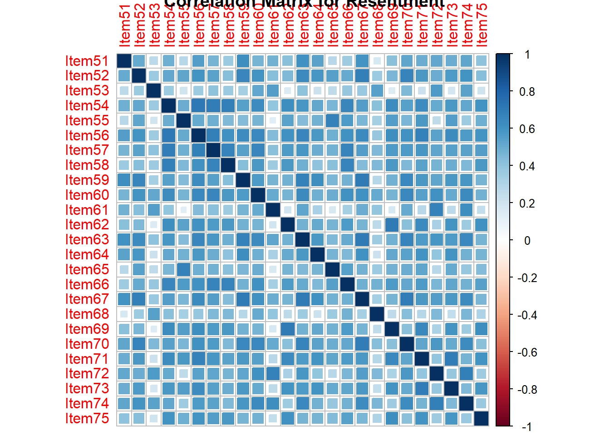
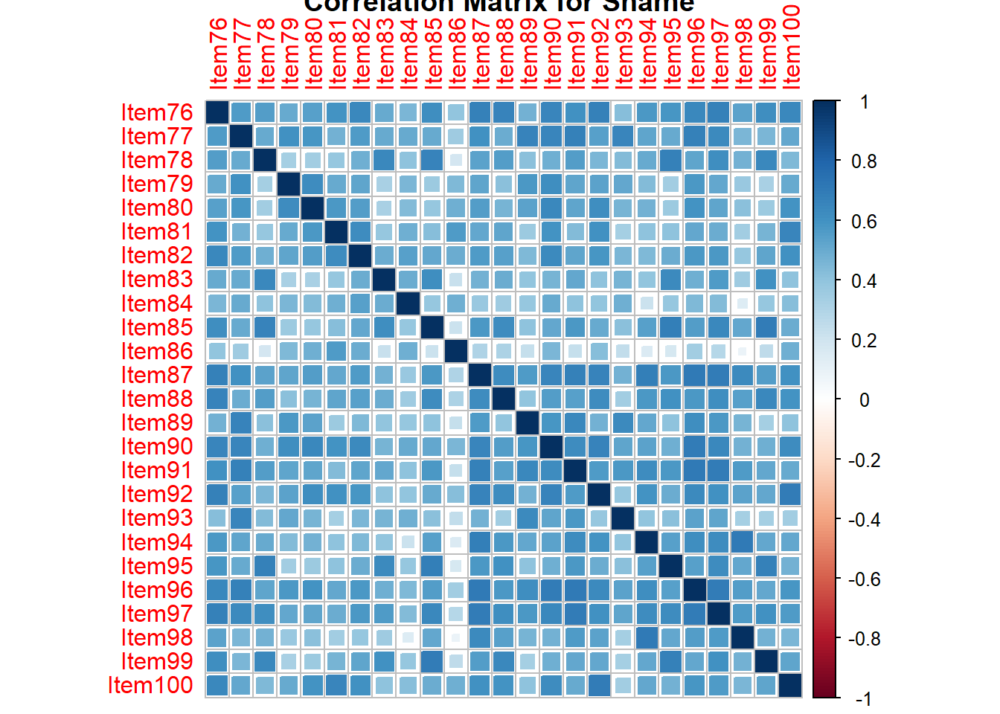

vars n mean sd median trimmed mad min max range skew kurtosis
X1 1 4950 7224.92 12.74 7225 7224.87 13.34 7183 7274 91 0.04 -0.09
se
X1 0.18Final_project
Final Project
Abstract
Imagination, often celebrated for its role in creativity and development, can also intersect with maladaptive personality traits, echoing the archetype of the ‘tormented genius.’ This study examines the structure of imagination, analyzing a large-scale cross-sectional dataset (N = 10,000) with a planned-missingness design. The functional sample size (pairwise-n = 8,500) was derived from the mean number of pairwise item administrations in the item pool. Our analysis found four factors emerge, which have been titled Hopelessness, Anxiety, Resentment, and Shame. These results highlight the dynamic, multi-faceted nature of imagination, underscoring its contributions to positive mental health and the development and maintenance of personality pathology.
Introduction
Imagination is a fundamental human ability which permeates our daily experiences, influencing everything from the mundane to the grand narratives of myths and legends. Central to creativity, problem-solving, and foresight, imagination shapes our perceptions of reality and the cognitive schemas we use to interpret the world around us (Gotlieb et al., 2019). As a multifaceted construct, imagination involves varying levels of mental imagery, social cognition, mental simulation, emotion, and temporal exploration (Abraham, 2016), using combinations of existing memory to create an experience distinct from external sensory stimuli. Though widely recognized as a positively valanced construct, imagination plays a complex role in mental health and personality. The tendency to frequently and intensely envision negative future scenarios is a feature of clinical depression (Gotlib & Joormann, 2010; Zetsche et al., 2019) and anxiety (Wu et al., 2015), while difficulty in distinguishing imagination from reality plays a role in thought disorders such as schizophrenia (Rasmussen et al., 2022; Jardri & Thomas, 2013). The intersection of imagination with psychopathology, as explored by Kaufman (2014) and Holmes & Mathews (2010), highlights the challenges associated with measuring such a complex construct and evaluating its impacts on mental health.
The Imaginative Process
Imagination is a cognitive function that encompasses various processes and is integral to human psychological functioning across a range of contexts. Abraham (2016) identifies five core categories that define imagination: perceptual/motor-related mental imagery, intentionality or recollective processing, novel combinatorial or generative processing, aesthetic phenomenology, and altered psychological states. This is extended by Crespi (2020), who asserts there are seven major components of imagination: pretend play, creativity, narratives and aesthetics, mental time travel, salience, mental imagery and sensory systems, and a neural system enabling imagination. These categories, grounded in both philosophical theory and empirical neuroscience evidence, highlight imagination’s virtually limitless capacity and varied manifestations. Each category has a distinct neural basis and operates through separate cognitive systems, contributing to the multifaceted nature of imaginative cognition. Common processes, such as mental simulation (Markman et al., 2012), mental time travel (Suddendorf, 1997), and perspective-taking (Batson, 2009), involve dynamic interplay between these categories. This interplay allows individuals to transcend the immediate present with novel thoughts about possible, past, and future scenarios.
Mullally & Maguire (2014) emphasize that memory forms the foundation for such imaginative projections, enabling the construction of future scenarios based on past experiences. This predictive aspect of imagination (“foresight”) is crucial for adaptive functioning, often aligned with personal and social objectives through cognitive control mechanisms Sass and Schuldberg (2011). While the neuroscientific understanding of some aspects of imagination, such as imagery, is well-developed, others like altered states remain less explored. One key area in this ongoing exploration is the Default Mode Network (DMN; Buckner et al., 2008), which Andrews-Hanna & Grilli (2021) have linked to various imaginative processes. Continual research into the facets of imagination is poised to uncover new insights and relationships, as underscored by the works of Abraham (2016) and Sassenberg et al. (2023). However, it’s crucial to recognize that dysfunction in imagination, such as excessive daydreaming (Somer, 2002) or problematic psychological states (Abraham, 2016) can be maladaptive. This underscores the importance of imagination as both a cognitive function and an enduring source of individual differences across the lifespan.
The evolution in psychometric research towards multifactor, dimensional models reflects a significant shift in how imagination is measured. Historically, tools like the Torrance Tests of Creative Thinking (TCTT; Torrance, 1974) and Gough’s (1979) Creative Personality Scale approached assessing imagination as a component of creativity. However, recent advancements have led to direct measures of imagination as a standalone construct. Notable advancements include the Imaginal Processes Inventory (IPI; Singer & Antrobus, 1963; Singer & Antrobus, 1966), a cross-cultural measure by Feng et al. (2017), and dimensional scales such as the Four-Factor Imagination Scale (FFIS; Zabelina & Condon, 2020) and the Dual-Factor Imagination Scale (DFIS; Sassenberg et al., 2023). The FFIS, in particular, offers a comprehensive evaluation of imagination, assessing the of dimensions Frequency (duration of time spent in imagination), Complexity (elaboration of imaginative activity), Emotional Valence (the emotional content of imagination), and Directedness (the extent to which imagination is goal-oriented). This approach aligns with contemporary frameworks of imagination and is powerful in exploring the range of imagination’s features, from its adaptive components to its potential role in adverse psychological outcomes.
With the multi-faceted nature of imagination and its potential intersection with maladaptive traits, it’s important to understand its psychometric structure.
Methods
To prepare our data for analysis, we will need to simulate it. This will be achieved using rnorm() and round(). The four factors will be simulated separately in “blocks” of 25 items each and merged together. These blocks will have different, randomly selected means and standard deviations in order to allow the factor analysis to locate the desired clusters of items from each of the factors. A spattering of NAs will also be introduced using something like this: sample(1:n, 0.15nrow(data)ncol(data), replace = T) paired with a for loop. This will introduce some amount of missingness (in this case, 15%) to make the data more realistic and add a bit of intrigue and decision making around handling the missing data. After this, the data will be ready for analysis including imputation, removal of missing data, partitioning into holdouts, and more. In this stage, we will use mutate() and other tidyverse() functions per the project requirements.
Data is simulated using a random sampling procedure. Four latent factors consisting of items rated 1 - 6 are produced using the sample() function and stored into a dataframe.
Results
We found four factors of imagination emerge from our analyses. Data is visualized below. (more info)
Cleaning the data involves the handling of missing values. 15% of the data is missing and there are no complete rows. In order to address this missingness, imptuation is used with the makeX() function from the glmnet() package.
The data is visualized in mutliple ways, including a correlation table, heatmap, and other plots.


item_1 item_2 item_3 item_4 item_5
item_1 1.000000000 -0.008050056 -0.011333592 0.009592578 -0.011190914
item_2 -0.008050056 1.000000000 0.008618004 0.003079410 0.003715811
item_3 -0.011333592 0.008618004 1.000000000 0.002635139 -0.010906044
item_4 0.009592578 0.003079410 0.002635139 1.000000000 -0.003181487
item_5 -0.011190914 0.003715811 -0.010906044 -0.003181487 1.000000000
item_6 -0.006859116 0.010779430 -0.008328796 0.011453777 -0.005490556
item_7 -0.004956589 0.014057200 -0.007846620 0.017897398 -0.002821324
item_8 -0.004204708 0.004621634 0.006851235 -0.027359464 -0.015050215
item_9 -0.012344701 0.002285383 -0.016774124 0.005898325 0.014829832
item_10 0.013015243 -0.006969842 0.013634808 -0.003679456 0.007626910 item_1 item_2 item_3 item_4 item_5
item_1 1.000000000 -0.008050056 -0.011333592 0.009592578 -0.011190914
item_2 -0.008050056 1.000000000 0.008618004 0.003079410 0.003715811
item_3 -0.011333592 0.008618004 1.000000000 0.002635139 -0.010906044
item_4 0.009592578 0.003079410 0.002635139 1.000000000 -0.003181487
item_5 -0.011190914 0.003715811 -0.010906044 -0.003181487 1.000000000
item_6 -0.006859116 0.010779430 -0.008328796 0.011453777 -0.005490556
item_7 -0.004956589 0.014057200 -0.007846620 0.017897398 -0.002821324
item_8 -0.004204708 0.004621634 0.006851235 -0.027359464 -0.015050215
item_9 -0.012344701 0.002285383 -0.016774124 0.005898325 0.014829832
item_10 0.013015243 -0.006969842 0.013634808 -0.003679456 0.007626910 item_1 item_2 item_3 item_4 item_5
item_1 1.000000000 -0.008050056 -0.011333592 0.009592578 -0.011190914
item_2 -0.008050056 1.000000000 0.008618004 0.003079410 0.003715811
item_3 -0.011333592 0.008618004 1.000000000 0.002635139 -0.010906044
item_4 0.009592578 0.003079410 0.002635139 1.000000000 -0.003181487
item_5 -0.011190914 0.003715811 -0.010906044 -0.003181487 1.000000000
item_6 -0.006859116 0.010779430 -0.008328796 0.011453777 -0.005490556
item_7 -0.004956589 0.014057200 -0.007846620 0.017897398 -0.002821324
item_8 -0.004204708 0.004621634 0.006851235 -0.027359464 -0.015050215
item_9 -0.012344701 0.002285383 -0.016774124 0.005898325 0.014829832
item_10 0.013015243 -0.006969842 0.013634808 -0.003679456 0.007626910
item_1 item_2 item_3 item_4 item_5
item_1 1.000000000 -0.008050056 -0.011333592 0.009592578 -0.011190914
item_2 -0.008050056 1.000000000 0.008618004 0.003079410 0.003715811
item_3 -0.011333592 0.008618004 1.000000000 0.002635139 -0.010906044
item_4 0.009592578 0.003079410 0.002635139 1.000000000 -0.003181487
item_5 -0.011190914 0.003715811 -0.010906044 -0.003181487 1.000000000
item_6 -0.006859116 0.010779430 -0.008328796 0.011453777 -0.005490556
item_7 -0.004956589 0.014057200 -0.007846620 0.017897398 -0.002821324
item_8 -0.004204708 0.004621634 0.006851235 -0.027359464 -0.015050215
item_9 -0.012344701 0.002285383 -0.016774124 0.005898325 0.014829832
item_10 0.013015243 -0.006969842 0.013634808 -0.003679456 0.007626910
mean(age)
1 31.62916 mean(age)
1 31.64116
Warning: Removed 1 rows containing missing values (`position_stack()`).
Discussion
In this study, we observed meaningful patterns of associations between the pool of imagination items administered, substantiating the hypothesis that imagination can prove maladaptive in various contexts and that it can be quantified in a four-factor structure. Imaginative emotional valence emerged as strongly associated with the PID-5, suggesting a clinically significant (Zimmermann et al., 2019; Miller et al., 2022) link between imagination and affective psychopathology. Similarly, the Frequency dimension mirrored the patterns observed in Emotional Valence but with slightly reduced effect sizes (see Table 4) and additionally correlated with traits indicative of cognitive biases and perceptual dysregulation. These associations point to the potential of excessive engagement in imagination in contributing to thought disorders (Andrews-Hanna & Grilli, 2021), indicating imaginative frequency is of clinical significance. These findings reinforce the clinical relevance of imaginative frequency. Directedness showed modest associations with pathological traits, while Complexity’s significant null associations with most PID-5 facets reveal a complex, perhaps less direct, relationship with personality pathology, warranting further investigation.
Complementing these correlational findings, our application of statistical learning techniques predicted various aspects of imagination based on the content of maladaptive trait items. This convergence of the results from different analytic methods attests to the strength of our findings and highlights the clinical potential of these techniques in assessing the impact of imagination on psychopathology. The ability of these models to predict the relationship between imagination and personality pathology points to the importance of considering imaginative processes in clinical assessments and interventions.
References
Sass, Louis A, and David Schuldberg. 2011. “Introduction to the Special Issue: Creativity and the Schizophrenic Spectrum.” Creativity Research Journal 13 (1): 1–4.